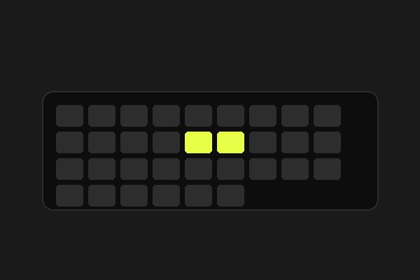

Switches
The mechanism under each key. They come in three families — linear, tactile, and clicky — and they define how the board feels.
Beginner's Guide
No jargon, no gatekeeping. Learn what switches feel like, what the parts do, and which board to buy first — then get a personalized pick below.
Explore switch types
Unlike a regular membrane keyboard, a mechanical keyboard uses an individual spring-loaded switch under every key. That switch is what gives each keypress its distinct feel and sound — and it's the reason the hobby exists. You can swap switches, keycaps, and even the case to make a board that types and sounds exactly how you like.
The mechanism under each key. They come in three families — linear, tactile, and clicky — and they define how the board feels.
The PCB (the circuit board), the case, the keycaps, and the stabilizers for big keys. Together they shape sound and looks.
A hotswap board lets you pull out switches by hand — no soldering. It's the easiest way to experiment as a beginner.
Answer two quick questions and we'll recommend an entry-level board that fits.
Boards you save from the recommender are stored in your browser so they're here when you come back.